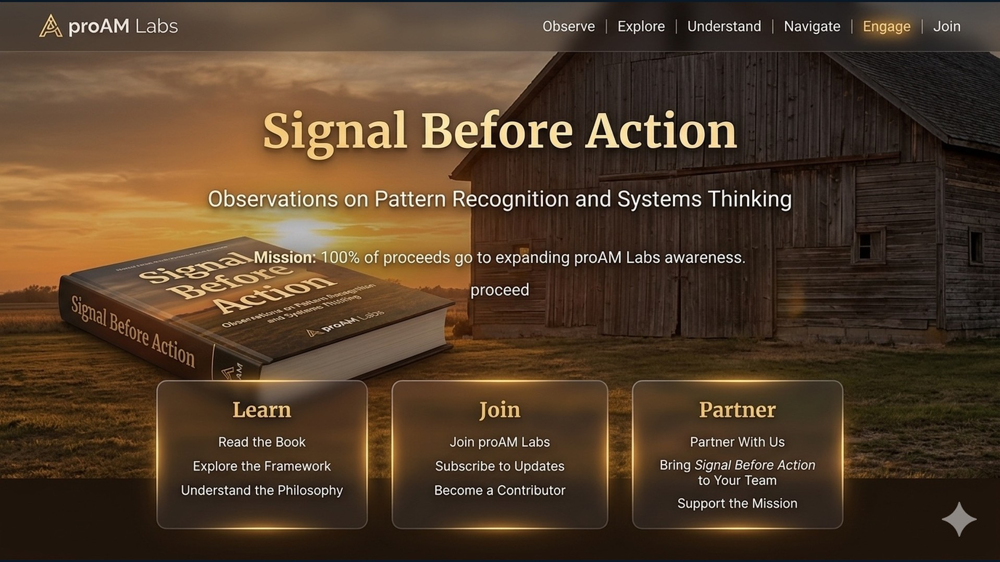
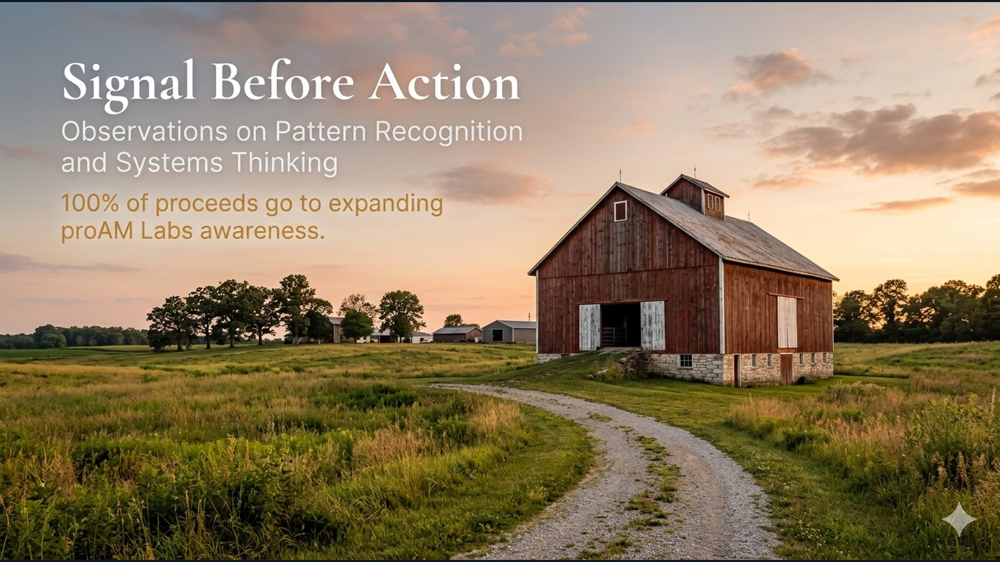
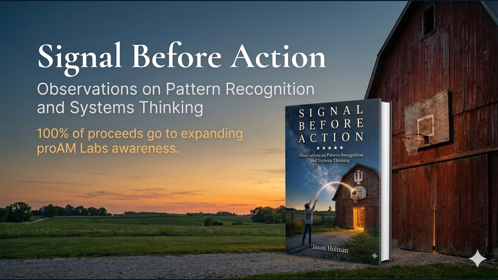
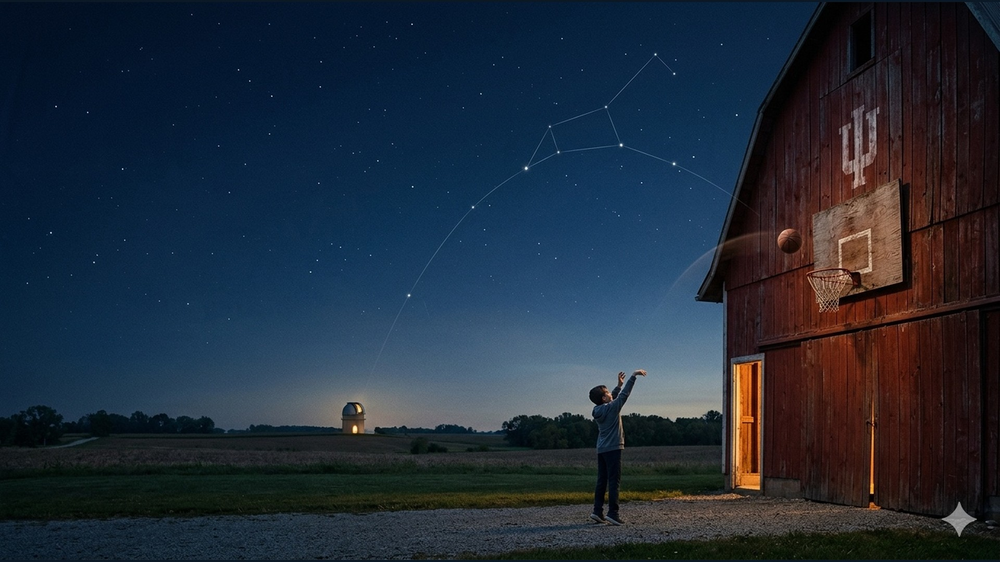
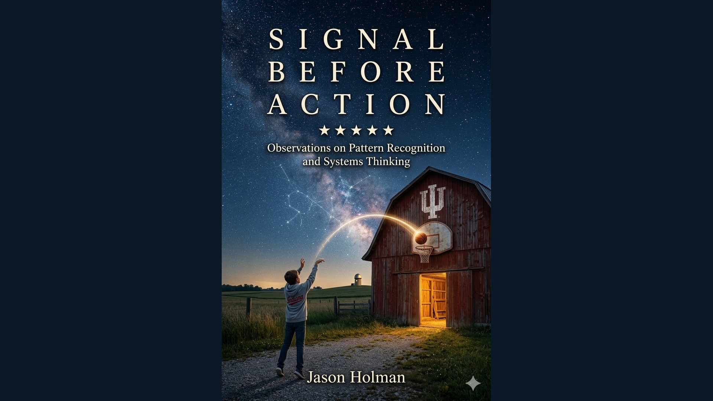

05 · The human perspective
Signal Before Action.
Observations on pattern recognition and systems thinking. A place to explore the ideas behind the work—and where they may lead.





1 / 5 · Original barn concept
Placeholder artwork · 1920 × 1080 frames. Swipe to explore.
The image is a design reference. Book, membership, partnership, and proceeds statements shown within it are part of the concept; this page does not offer purchases or enrollment.

Your next step
What are we going to do, now?
Bring an opportunity, a priority, or a change you want to understand. Begin with what matters to you.
Enter the Front PorchYour entry into POS-Lite — the Personal Orientation System. Explore the demo without signing up.